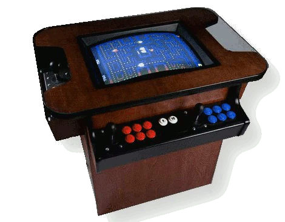

Copyright (C) 2015 by Juergen Wothke (The source code can be found here.)
webVGM is a JavaScript/WebAssebly/HTML5 port of VGMPlay. It plays music files in the Video Game Music Files (*.vgm, *.vgz) formats. VGMPlay emulates a variety of sound chips used in legacy arcade and console game hardware: SN76496 (Sega PSG) and T6W28 (NeoGeo Pocket custom), YM2413* (OPLL), YM2612 (OPN2), YM2151 (OPM), SegaPCM, RF5C68, YM2203 (OPN), YM2608 (OPNA), YM2610/B (OPNB), YM3812* (OPL2), YM3526* (OPL), Y8950* (MSX AUDIO), YMF262* (OP3), YMF278B (OPL4), YMF271 (OPLX), YMZ280B, RF5C164 (Sega MegaCD PCM), PWM (from Sega 32x), AY8910 (MSX PSG), GameBoy DMG, NES APU (incl. FDS), MultiPCM, UPD7759, OKI6258 (Sharp X68000 ADPCM), OKI6295, K051649, K054539, HuC6280 (PC Engine), C140, K053260, Pokey (Atari), QSound, SCSP (Saturn Custom Sound Processor, YMF292-F)
Respective music files can be found here. Bring your own music files by dropping them onto the page.
This is one of about 30 music players that I have ported to the Web over the years. To hear them all in action visit my PlayMOD page.
Credits: The original VGMPlay was created by many contributors and it is based on other projects like: MAME, DosBox, openMSX, Gens/GS, NFSPlay, Ootake, Gens, MEKA, zlib, in_wsr, vbjin/mednafen, EMU2149/EMU2413, etc. Please consult the original VGMPlay repository for details. The music files used as examples are fetched directly from https://vgmrips.net/packs/ (If you are a copyright holder of a respective song and do not want it to be used here let me know so that I can replace it.)
